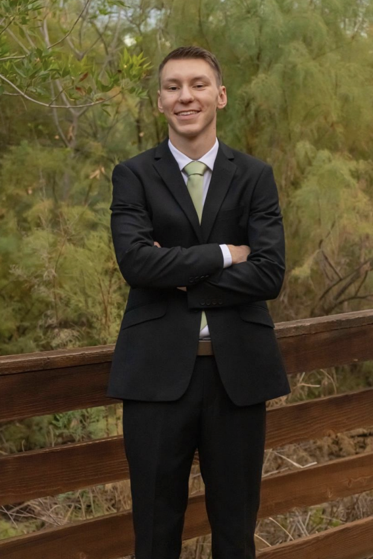
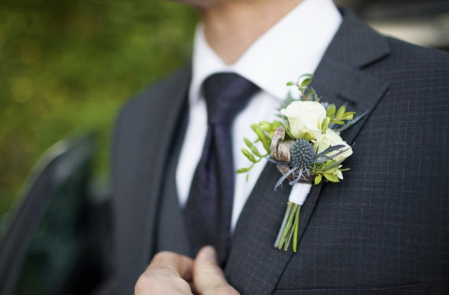
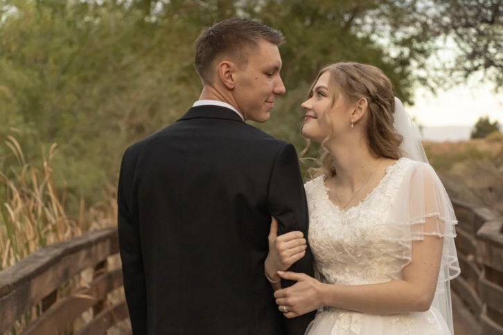

About Me

I was married on October 17, 2025, to Kaylyn Ashcraft. We met in high school and dated for over three years before getting married.
Two of those years were spent in a long-distance relationship. That experience helped strengthen our relationship and prepared us for marriage.
More About Me
I love, more than anything, spending time with my wife. We enjoy watching TV shows, reading books, and going on walks together.
I also enjoy playing games with my brothers and collecting LEGO Star Wars.
If you want to contact me, I would love to talk more! Message me through LinkedIn or Facebook.

